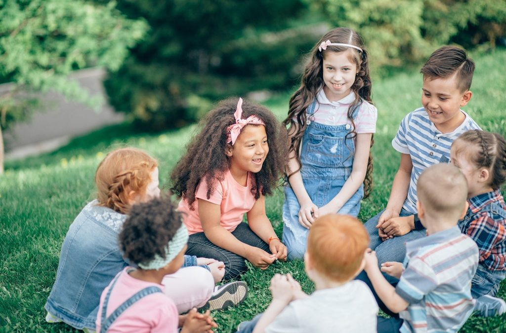
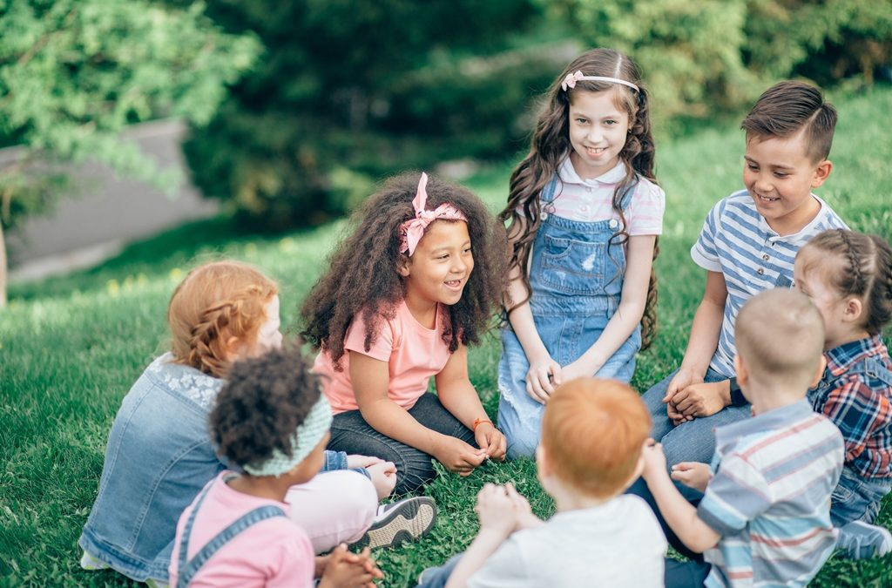

Here we takecare of your son's physical health as we care about his food and his muscles
1- Healthy nutrition for children: Information should be provided
about the foods and drinks that children need for their healthy
growth,as well as how to prepare and consume healthy, balanced meals.
2- Growth and development: Information should be provided about
the different age stages of children and how to assess their growth
and development in a healthy way, including information about weight,
height, and body mass index.
3- Physical health: Information should be provided about how to maintain
children's physical health, including exercise, physical activity, rest,
and relaxation.
1-1 Healthy nutrition for children
1.1.1-Protein: Helps build and repair tissues, and supports the immune system.
Good sources include lean meats, poultry, fish, beans, nuts, and dairy products.
1.1.2-Carbohydrates: Provide energy for physical activity and brain function.
Choose whole grains, fruits, vegetables, and legumes as healthy sources of carbohydrates.
1.1.3-Healthy fats: Essential for brain development and nervous system function.
Include foods such as avocados, nuts, seeds, and fatty fish (e.g. salmon) in your child's diet.
1.1.4-Vitamins: Important for overall health and wellbeing.
Encourage your child to eat a variety of colorful fruits and vegetables to get a range of vitamins.
1.1.5-Minerals: Help with bone growth, muscle function, and other bodily processes.
Good sources include leafy greens, dairy products, whole grains, and fortified cereals.
1.1.6-Water: Essential for hydration and overall health.
Ensure your child drinks enough water throughout the day, especially during physical activity.
1.2- Here are some food recommendations that can provide the necessary nutrients for the healthy growth and development of children aged 3-6:
1.2.1-Fruits and vegetables: Encourage your child to eat a variety of colorful fruits and vegetables every day. This will provide them with essential vitamins, minerals, and fiber. You can offer them as snacks or include them in meals.
1.2.2-Lean proteins: Include lean meats such as chicken and turkey, fish, eggs, beans, lentils, and tofu in your child's diet. These foods are rich in protein which is important for building muscle and supporting the immune system.
1.2.3-Whole grains: Choose whole grain bread, pasta, rice, and cereal products instead of refined grains. They contain more fiber, vitamins, and minerals that support growth and development.
1.2.4-Dairy products: Milk, cheese, and yogurt are good sources of calcium, vitamin D, and other nutrients that are important for strong bones and teeth.
1.2.5-Healthy fats: Include healthy fats in your child's diet such as avocado, nuts, seeds, and fatty fish like salmon. These foods are a good source of omega-3 fatty acids that support brain development and function.
Remember to also encourage your child to drink plenty of water throughout the day, especially during physical activity.
 

Sports and physical activities are an important part of a child's growth and development. Here are some examples of sports games that are suitable for children between the ages of 3 to 6 years old:
1-Running games: Simple running games like tag or relay races can help children develop their gross motor skills, balance and coordination.
2-Ball games: Playing with soft balls or beach balls can be fun for young children and help them develop hand-eye coordination. Games like catch, rolling the ball back and forth, or kicking a ball back and forth can also be enjoyable.
3-Dancing: Encourage your child to dance to music or follow along with simple dance routines. This can improve their balance, flexibility, and strength.
4-Obstacle courses: Use furniture, pillows, blankets, and other household items to create a simple obstacle course. This can challenge children's motor planning skills and spatial awareness.
5-Hula hooping: Using a lightweight hula hoop can be a fun way to improve coordination and balance.
6-Swimming: If safe and supervised, swimming can be a great way for children to strengthen their muscles and cardiovascular system.
Remember to always supervise young children during physical activity and choose age-appropriate activities that don't pose a risk of injury.